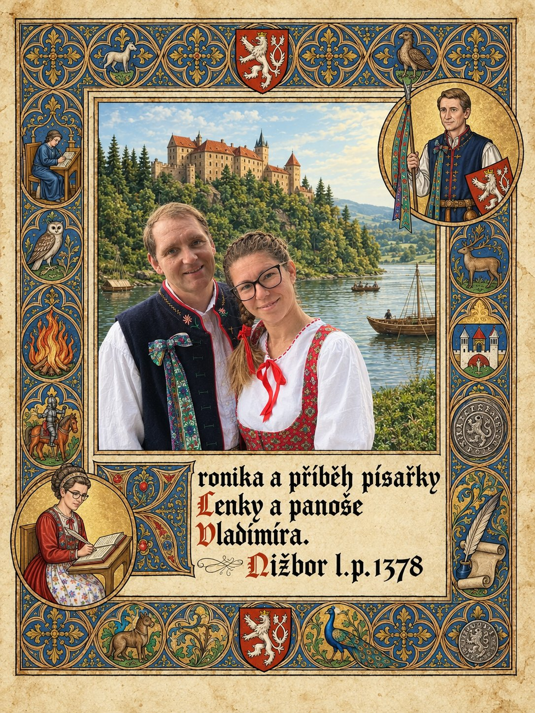

Klepněte na knihu a otevřete ji.
Kronika z Nižboru
Panoš Vladimír a písařka Lenka – rodinná kronika z časů císaře Karla IV.
Kapitoly
Kapitola I – Pět ohňů zdarma
duben–květen 1345
Kapitola II – Vázička z Kdyně
květen 1345
Kapitola III – Šance utéct
1. června 1345
Kapitola IV – Jelen v sudu
5.–7. června 1345
Kapitola V – Víly ze Skryjí
10.–15. června 1345
Kapitola VI – Medlešický řízek
19.–22. června 1345
Kapitola VII – Zrádci z Křivoklátu
svatojánská noc 1345
Kapitola VIII – Drak z Kouta
sv. Anna 1345
Kapitola IX – Svatý Jan pod Skalou
15. srpna 1345
Kapitola X – Vlci na Modravě
Tři králové 1346
Kapitola XI – Lipový list
září 1346
Kapitola XII – Blesk
posvícení 1346
Kapitola XIII – Studené moře, studená pěna
po seznámení dětí, konec 1346
Kapitola XIV – Věční zbrojnoši
jaro 1347
Kapitola XV – Korunovační groš
2. září 1347
Kapitola XVI – Dva zlaté oblouky
říjen 1347, cestou do Neapole
Kapitola XVII – Placky z Neapole
říjen 1347
Kapitola XVIII – Jeden den královnou
jaro 1348
Kapitola XIX – Festung
1348
Kapitola XX – Sud s kladívkem
hody sv. Jiljí 1349
Kapitola XXI – Sovy vědí kam
podzim 1349
Kapitola XXII – Hromnice na jezeře Laka
Hromnice 1350
Kapitola XXIII – Slečna Lisa ještě není
květen 1350, mezi Lakou a svatbou
Kapitola XXIV – Lev nakloněný doleva
sv. Jakub 1350
Kapitola XXV – Pod ořechem
26. září 1350
Kapitola XXVI – Poznámky na okraji
Štědrý den 1378
← zpět na hlavní stránku